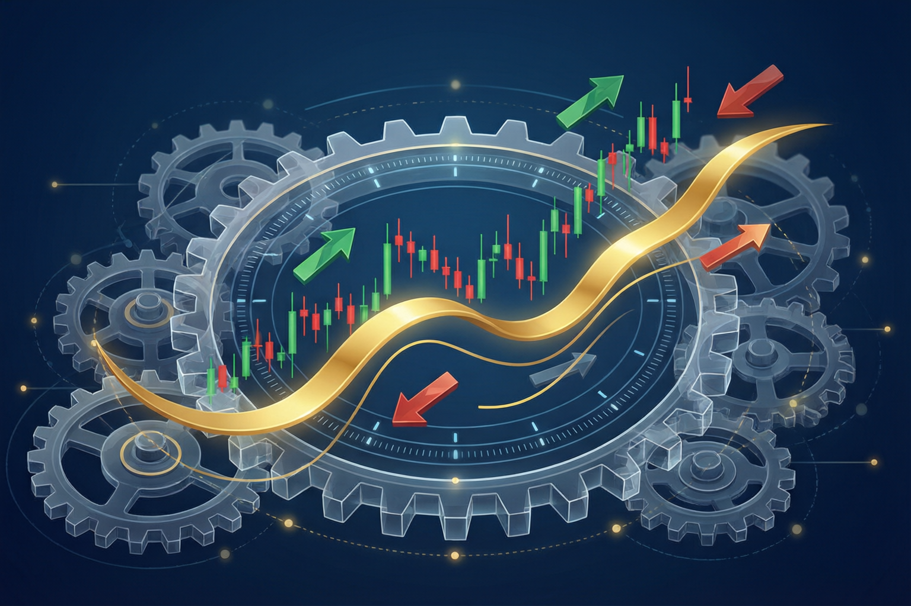

AlphaForge（原名 daily-stock-analysis）以数据驱动方式辅助投资决策，集成 LLM、多 Agent 协作、因子自进化与策略回测四大引擎。
技术面 + 基本面 + 情绪面三路 Agent 并行分析，LLM 综合裁决。
三轮制辩论：独立分析 → 交叉质询 → 裁判裁决，提升信号可靠性。
六步推理框架（观察→判断→假设→验证→风险→结论），强制证据支撑。
真实感回测仿真：T+1、涨跌停、手续费、滑点，支持参数优化。
LLM 驱动的因子自动发现与遗传进化，IC/IR 量化评估筛选。
全市场扫描，多策略打分筛选优质标的。
信号发出 → 事后评估 → 经验积累 → Few-shot 注入 → 分析改进。
多账户模拟交易、持仓跟踪、盈亏统计、公司行动处理。
价格/技术指标/事件多维告警，邮件、Webhook、Bark 多渠道推送。
多轮会话，结合 ReAct Agent 实现工具调用与自然语言操控。
六维策略质量评分（ABCD 等级）+ LLM 分析幻觉检测。
生成/优化 → 质量门晋升 → 信号纸面执行 → 复盘写回 → 因子周进化。
| 类别 | 选型 | 说明 |
|---|---|---|
| 运行时 | Java 17 | LTS 版本，支持 Records、模式匹配 |
| 核心框架 | Spring Boot 3.2.5 | 父 POM 统一管理依赖版本 |
| 数据层 | SQLite + MyBatis 3.0.3 | 嵌入式数据库，零运维部署 |
| HTTP / JSON | OkHttp 4.12 / Jackson 2.17 | 外部数据源与 LLM 调用 |
| 技术指标 | TA-Lib 0.4.0 | MACD、KDJ、RSI、布林带等指标计算 |
| 安全 | JJWT 0.12.5 | JWT Bearer Token 认证 |
| 工具库 | Guava 33.1 / Commons Lang3 | 集合、缓存与字符串工具 |
| 构建部署 | Maven + Docker | 单 JAR 构建，temurin:17-jre-alpine 镜像 |
经典四层架构 + 依赖倒置端口，认知轨与功能轨双轨分离。
对话（含流式）、深度分析推理、策略生成/优化、自治研判，统一走 Planner → Guardrail → dispatch → Critic 执行闭环。已接入任务类型：CHAT、STOCK_ANALYSIS、STRATEGY_GENERATE、AUTONOMY_DECISION。
CRUD、查询、事务、定时编排（如 StockAnalysisPipeline）直连领域服务，零 LLM 开销。其推理子步骤委托 AgentKernel 执行——内核是系统唯一的认知权威。
HybridPlanner = SopPlanner + LlmPlanner；SOP 骨架外置于 resources/plans/*.yaml
统一治理闸：状态变更须任务授权 + 自治开关 + 熔断校验（默认关闭即拦截）
分发到具体能力实现（AgentAnalysisService 含四级降级链）
结果评审（质量校验暂内置于能力实现，后续收敛至此）
| Controller | 路径前缀 | 职责 |
|---|---|---|
AnalysisController | /api/v1 | 股票分析、历史记录、行情查询 |
BacktestController | /api/v1/backtest | 策略回测、参数优化、蒙特卡洛模拟 |
PortfolioController | /api/v1/portfolio | 投资组合查询 |
PaperTradingController | /api/v1/paper-trading | 模拟交易（账户、买卖、持仓） |
SignalController | /api/v1/signal | 决策信号管理 |
ScreeningController | /api/v1/screening | 智能选股（AlphaSift） |
AlertController | /api/v1/alert | 告警规则管理 |
ChatController | /api/v1/chat | AI 对话会话 |
StrategyController | /api/v1/strategy | 策略目录查询 |
WatchlistController | /api/v1/watchlist | 自选股管理 |
SystemController | /api/v1/system | 健康检查、用量统计、仪表盘 |
AuthController | /api/v1/auth | JWT 认证 |
AkShare / EFinance / Tushare / YFinance 自动切换；CircuitBreaker 熔断恢复、RateLimiter 防封禁流控、指数退避重试、交易日感知缓存、DataQualityValidator 数据质量校验。
LlmChannelManager 支持 OpenAI / DashScope / Ollama 故障切换；含请求构建（Function Calling）、SSE 流式解析、指数退避重试、Token 费用追踪、响应缓存与 Micrometer 埋点。
NotificationRouter 按配置分发：Email（Spring Mail）、企业微信/飞书 Webhook、iOS Bark 推送。
必须依赖走构造函数注入（启动强校验）；可选依赖（如辩论编排器）@Autowired(required=false)，配置不全时自动降级。
StockAnalysisPipeline：功能轨确定性骨架 + 认知轨推理委托，30+ 步骤完成一次完整分析。
| # | 步骤 | 负责组件 |
|---|---|---|
| 1 | 解析股票列表 | NameToCodeResolver（名称→代码模糊匹配） |
| 2 | 获取历史 K 线数据 | DataFetcherManager（多源 + 缓存） |
| 3 | 技术指标计算 | TechnicalAnalysisService（TA-Lib） |
| 4 | 上下文构建 | AnalysisContextBuilder |
| 5 | 上下文增强 | AnalysisContextEnhancer（筹码/板块/新闻/大盘） |
| 6 | 信号学习注入 | SignalLearningService → Few-shot 经验 |
| 7 | Agent 分析 | AgentKernel 认知轨委托 AgentAnalysisService（四级降级链） |
| 8 | 结果聚合 | AnalysisResultAggregator（综合评分） |
| 9 | 后处理 | 信号提取 · 报告存储 · Fallback 补全 · 通知推送 |
| 10 | 诊断记录 | DiagnosticContext 运行时快照 + PipelineMetrics 指标 |
多 Agent 协作 + 三轮辩论 + 六步推理链 + 完整降级链，是 AlphaForge 的认知核心。
AgentAnalysisService 实现：任何一级失败都会自动落到下一级，保证分析任务「永远有结果」。可选编排器缺失（未配置）时通过 required=false 注入在启动期即完成降级。技术面分析：均线、MACD、KDJ、量价形态。Prompt：technical_agent_system.yaml
基本面分析：财务、估值、成长性。Prompt：fundamental_agent_system.yaml
风险审核：OPPOSE 意见具「一票否决」权重，防止过度乐观。Prompt：risk_agent_system.yaml
每个 SubAgent 返回统一的 AgentResult：信号（buy/sell/hold）、评分（0-100）、置信度、分析文本、关键发现要点与耗时。
复用 MultiAgentOrchestrator，各 Agent 互不知晓他人观点，独立给出初步结论。
所有初步结论作为上下文，LLM 模拟各 Agent 视角质询；须声明立场 SUPPORT / OPPOSE / NEUTRAL。
综合 Round1 结论 + Round2 论点输出最终信号，记录共识度（consensusLevel）。
① 观察 → 直接陈述数据事实
② 判断 → 基于观察的初步判断
③ 假设 → 提出可能的解释
④ 验证 → ≥2 个数据证据验证假设
⑤ 风险 → ≥1 个反面论点
⑥ 结论 → 综合给出明确结论
① 汇总 → 各维度关键结论
② 一致性 → 检查结论是否一致
③ 权衡 → 分析一致与矛盾的权重
④ 综合 → 形成整体判断
⑤ 风险 → 识别最主要下行风险
⑥ 决策 → 明确交易信号与置信度
ReAct（Reasoning + Acting）模式按 Thought → Action → Observation → … → Final Answer 交替推理与行动。工具经 LlmToolAdapter 适配为 OpenAI Function Calling 格式，由 LLM 决定调用时机：
| 工具名 | 功能 |
|---|---|
get_stock_data | 获取历史 K 线数据 |
calculate_technical_indicators | 计算技术指标 |
get_news | 获取相关新闻 |
get_market_overview | 获取大盘概况 |
autonomy_control | L4 自主交易的自然语言控制（status / set_flags / halt / resume / bind_account / audit） |
数据准确性（与源数据交叉验证）· 逻辑一致性 · 完整性（技术/基本/风险）· 可操作性（入场/止损/目标价）· 风险披露。
幻觉检测：报告数值与上下文实际数据比对，发现捏造数据即 blockSignal=true，信号跳过落库。
系统在约束内可完成：生成/优化 → 质量门晋升 → 信号纸面执行 → 复盘降级/写回 → 因子周进化。所有自动执行开关默认关闭，仅纸面下单，绝不触达实盘。
| 组件 | 职责 |
|---|---|
StrategyPromotionGate | TESTING→PUBLISHED 质量门（Grade + Walk-Forward 验证） |
TradingRiskGuard | 熔断：组合回撤 ≥15%、日亏损 ≥5% 自动停止 |
SignalToPortfolioExecutor | 信号 → 仓位 → 纸面买卖（PaperOrderExecutionAdapter） |
StrategyRefineLoop | 生成 → 回测 → 改写 的自动优化循环 |
FactorEvolutionScheduler | 因子周进化调度（默认每周一 20:00） |
AUTONOMY_ENABLED 总开关默认 false；自动执行、自动晋升默认关闭；运行时可通过 POST /api/v1/autonomy/halt 一键熔断，或经 AI 对话说「熔断」直接触发。YAML 配置驱动 · 四维分类 · 三种引擎能力 · 19 个内置策略。
基于价格、成交量、技术指标的量化条件。10 个策略
基于财务数据、估值指标的价值筛选。5 个策略
基于市场情绪、资金流向、龙头效应。3 个策略
基于公司事件、行业事件、宏观政策。1 个策略
| 分类 | 策略 ID | 名称 | backtest | scoring | screening |
|---|---|---|---|---|---|
| 技术面 | ma_golden_cross | 均线金叉 | ✓ | ||
volume_breakout | 量价突破 | ✓ | ✓ | ||
bull_trend | 强势趋势 | ✓ | ✓ | ||
shrink_pullback | 缩量回调 | ✓ | ✓ | ||
box_oscillation | 箱体震荡 | ✓ | ✓ | ||
wave_theory | 波浪理论 | ✓ | ✓ | ||
chan_theory | 缠论 | ✓ | |||
bottom_volume | 底部放量 | ✓ | |||
one_yang_three_yin | 一阳穿三线 | ✓ | |||
momentum | 动量策略 | ✓ | |||
| 基本面 | growth_quality | 成长质量 | ✓ | ✓ | |
expectation_repricing | 预期重估 | ✓ | |||
dual_low | 双低策略 | ✓ | |||
value_growth | 价值成长 | ✓ | |||
dividend | 高股息 | ✓ | |||
| 情绪面 | dragon_head | 龙头效应 | ✓ | ✓ | |
emotion_cycle | 情绪周期 | ✓ | ✓ | ||
hot_theme | 热门主题 | ✓ | |||
| 事件驱动 | event_driven | 事件驱动 | ✓ | ✓ |
历史 K 线回测，逐日生成买卖信号序列（返回 1/0/-1）。
综合分析时对策略命中情况加权评分，输出 0-100 综合总分。
被 AlphaSift 调用，对全市场股票逐一打分排序取 Top N。
id: ma_golden_cross
name: 均线金叉策略
category: technical
# 回测配置块
backtest:
position_size: 0.95 # 仓位比例（留 5% 现金作手续费缓冲）
entry_conditions: # 全部满足则买入
- type: ma_cross
fast: 5
slow: 20
direction: golden
exit_conditions: # 任一满足则卖出
- type: ma_cross
direction: dead
- type: stop_loss
pct: 0.07 # 7% 止损
# 评分配置块 / 选股配置块（conditions + weight 加权）
scoring:
conditions:
- type: ma_cross
weight: 30| 条件类型 | 说明 | 条件类型 | 说明 |
|---|---|---|---|
ma_cross | 均线交叉（金叉/死叉） | rsi | RSI 超买超卖 |
ma_position | 价格在均线上/下 | macd_cross | MACD 金叉/死叉 |
volume_ratio | 量比（当日量/N日均量） | stop_loss | 固定百分比止损 |
price_change | 涨跌幅范围 | stop_profit | 固定百分比止盈 |
holding_days — 持仓天数触发 | 加载：StrategyCatalogLoader 启动注册，支持 reload() 热更新 | ||
网格搜索参数空间（如 fast∈[3,5,10] × slow∈[20,30,60]），按夏普比率排序返回最优组合。
滚动「训练→测试」窗口前向验证，识别过拟合，确认样本外有效性。
收益序列 1000 次随机重排，输出回撤/收益的 95%/5% 分位数区间，评估统计稳健性。
BacktestSimulator：专为 A 股约束设计的真实感仿真器。

warmupDays = 最长均线周期，保证指标有效
NEXT_OPEN 先执行上一根挂单 → 更新组合市值与回撤 → 信号引擎产出 1/0/-1
BarTradability 判断涨跌停/停牌/T+1，不可成交则计入诊断
结束强制平仓，finalizeMetrics 计算全部绩效指标
信号触发后次日开盘成交。贴近 A 股现实：T+1 限制、开盘跳空使买卖价更真实。
信号当日收盘成交，用于测试策略收益的理论上限。
| 费用项 | 公式 | 典型值 |
|---|---|---|
| 买入佣金 | 成交额 × commissionRate，不低于最低佣金 | 万分之三，最低 5 元 |
| 卖出佣金 | 同买入佣金 | 同上 |
| 印花税 | 成交额 × stampTaxRate（仅卖出收取） | 千分之一 |
| 买入滑点 | 成交额 × slippageRate（成本增加） | 可配置（默认万分之五） |
| 卖出滑点 | 成交额 × slippageRate（收益减少） | 同上 |
买入遇涨停 → skippedBuys++；卖出遇跌停 → skippedSells++（阈值 ±9.9%）。
当日买入不可当日卖出，冲突时 t1BlockedSells++ 并顺延。
买入股数对 lotSize=100 取整，避免零股。
| 指标 | 计算方式 | 指标 | 计算方式 |
|---|---|---|---|
| 总收益率 | (期末-期初)/期初 × 100 | 夏普比率 | (日均收益×252 − 3%) / (日波动×√252) |
| 年化收益率 | totalReturn × 252 / 交易日数 | 胜率 | wins / completedTrades |
| 最大回撤 | 逐日 (peak − current) / peak | 盈亏比 | grossProfit / grossLoss |
| Alpha | totalReturn − benchmarkReturn | 平均持仓天数 | totalHoldDays / completedTrades |
BacktestDailySnapshot（组合市值 / 基准市值 / 当日回撤 / 收盘价），经 GET /backtest/{id}/visualization 输出供前端绘图；完整诊断（佣金、印花税、滑点、跳过统计）写入 result.diagnostics。基于论文 FactorMiner / AlphaAgentEvo：LLM 驱动的遗传算法自动发现、评估、进化量化因子——「AI 锻造 Alpha」。
调用 LLM 根据历史经验生成因子表达式。
表达式执行引擎 + IC/IR 计算 + 多空回测验证。
持久化跨代进化记录，经验传承。
管理已验证的优质因子（生产因子库）。
候选因子提交评估
IC/IR + 回测计算中
通过阈值 → PROMOTED 晋升生产库
未通过 → 提取失败模式，作为下一代负向约束
INITIAL 初始生成 PARAM_MUTATE 参数变异 EXPR_MUTATE 表达式变异 CROSSBREED 因子杂交 INVERSE_MUTATE 逆向变异 CONDITION_SPECIALIZE 条件特化 COMBINE 因子组合
第 t 日因子值截面排序与 5 日后收益率截面排序的相关性；|IC| > 0.03 认为有显著预测力。
衡量因子预测力的稳定性；IR > 0.5 认为因子质量良好。综合评分 = w₁×IC均值 + w₂×IR + w₃×夏普 + w₄×覆盖率 + w₅×换手率得分。
# 量价动量因子
momentum_vol_20d = (close - delay(close, 20)) / delay(close, 20) * volume_sum(20)
# 组合因子
quality_growth = roe * (1 - debt_ratio) / pe
# 支持算子：价格(close/open/high/low) · 量额(volume/amount/turnover)
# 时序(delay/ts_mean/ts_std) · 截面(rank/normalize/winsorize) · 数学(+−×÷/log/abs/sign)SQLite 嵌入式存储（~/.alphaforge/data/stock_analysis.db），schema.sql 幂等初始化，23 张表分 10 组。
| 分组 | 表 | 分组 | 表 |
|---|---|---|---|
| 分析系统 | analysis_report AI 分析报告 | 投资组合 | portfolio_accounts / positions / trades |
analysis_tasks 异步分析任务 | cash_ledger · corporate_actions | ||
| 决策信号 | decision_signals 交易信号 | 告警系统 | alert_rules / triggers / notifications |
decision_signal_outcomes 事后评估 | 其他 | stock_daily_data · watchlist | |
decision_signal_feedback 用户反馈 | chat_sessions · chat_messages · llm_usage_daily | ||
| 回测 | backtest_records | 因子进化 | factor_candidates / evaluations / evolution_memory / failure_patterns / evolved_factor_registry |
综合评分、信号（strong_buy…strong_sell）、置信度、三路分析全文、Agent 模式、LLM 模型、耗时与 Token 用量——完整可回溯。
系统最核心输出：动作、置信度、评分、期限、入场价区间、止损/目标价、失效条件、证据链 JSON、计划质量与状态机。
@Mapper（端口即适配器，全库约 20 个），SQL 集中在 mapper/*.xml。代价（领域层编译期依赖 MyBatis 注解）被明确接受；约束：仅仓储接口可含 MyBatis 注解，领域实体与领域服务保持纯净；未来多实现/换技术栈时再升级为独立适配器层。JWT Bearer Token 认证（POST /api/v1/auth/login 获取）；错误由 GlobalExceptionHandler 统一处理。
/api/v1
POST /analysis/run 异步触发分析
GET /analysis/tasks/{id} 任务进度
GET /history 分析历史 / GET /history/{id} 详情
GET /stocks/{code}/quote 实时行情
GET /market/overview 大盘概况
/api/v1/backtest
POST /run 运行回测
GET /history 回测历史
GET /{id}/visualization 权益曲线
POST /parameter-optimize 参数优化
POST /walk-forward · /monte-carlo · /portfolio
/api/v1/signal · /screening
GET /signal/list · /signal/{id}
POST /signal/{id}/feedback 用户反馈
POST /screening/run 全市场扫描选股
GET /screening/tasks/{id} 任务状态
/portfolio · /paper-trading
GET /portfolio/accounts[/{id}]
POST /paper-trading/accounts 创建账户
POST .../{id}/buy · /sell 模拟买卖
GET .../{id}/positions 持仓
/alert · /chat
POST/GET/PUT/DELETE /alert/rules
GET /alert/triggers 触发历史
POST /chat/sessions 创建会话
POST/GET .../{sessionId}/messages 消息收发
/decision · /system
GET /decision/score 价/势/时三灯 + 七态结论 + ATR 交易计划
GET/PUT /profile 用户风险画像
GET /system/health · /usage · /dashboard
GET /health/datasources 数据源主动体检
GET /api/v1/decision/score?code=600519&cost=150.0 基于价/势/时三个正交维度输出三灯评估、七态行动结论（trend_entry / trend_only / wait_pullback / left_watch / avoid / reduce_risk / unrated）、ATR 交易计划（入场/止损/2R/3R/建议仓位）与结构化证据链；风险画像（保守×0.5 / 平衡×1.0 / 激进×1.5）影响建议仓位。
GET /api/v1/autonomy/status · POST /api/v1/autonomy/halt | resume · POST /api/v1/autonomy/bind-paper-account
/actuator/health · /actuator/info · /actuator/metrics · /actuator/prometheus（需授权）。
单 JAR 交付 · Docker 容器化 · 环境变量驱动配置，运行时数据统一存放于 ~/.alphaforge/。
| 项目 | 规格 | 项目 | 规格 |
|---|---|---|---|
| Java | JDK 17+ | 磁盘 | ≥ 2GB（含行情缓存） |
| 内存 | 最低 512MB，推荐 1GB+ | 网络 | 可访问 LLM API + A 股行情源 |
# 1. 配置环境变量（必填：LLM_API / LLM_API_KEY / LLM_MODEL / JWT_SECRET）
cp .env.example .env
# 2. 本地启动
mvn clean package -DskipTests
java -jar target/alphaforge-1.0.0.jar # 或 mvn spring-boot:run
# 3. Docker 部署
docker build -t alphaforge:latest .
docker run -d --name alphaforge -p 8000:8000 \
-v ~/.alphaforge:/root/.alphaforge --env-file .env alphaforge:latest
# 或一键：docker-compose up -d（基础镜像 eclipse-temurin:17-jre-alpine）| 变量 | 默认 | 说明 |
|---|---|---|
SERVER_PORT / SERVER_HOST | 8000 / 0.0.0.0 | 服务监听地址 |
AGENT_MODE | react | single / react / multi / debate |
LLM_API_2 / LLM_API_KEY_2 / LLM_MODEL_2 | — | 第二 LLM 渠道，故障自动切换 |
DATA_PROVIDER_PRIMARY / FALLBACK | akshare / eastmoney | 行情数据源优先级 |
MAIL_* / WEBHOOK_URL / BARK_URL | — | 邮件 / 企业微信飞书 / iOS 通知 |
TELEGRAM_BOT_TOKEN / CHAT_ID | — | Telegram Bot 接入 |
AUTONOMY_* | 全部关闭 | L4 自主交易开关组（见 Agent 章节） |
工作日 15:30，对自选股批量执行分析
每 5 分钟扫描告警规则触发情况
每日 20:00，对 5/10/20 天前信号事后评估
每周一 20:00（可配 CRON）
| 场景 | 建议 |
|---|---|
| LLM 调用慢 | 开启 LlmResponseCache（开发/测试环境），或换更快模型 |
| 全市场选股耗时长 | 缩小 AlphaSift 扫描 Universe 范围 |
| 回测数据拉取慢 | 预拉取并缓存历史行情，或缩短回测区间 |
| 内存占用高 | 减小 druid.max-active 与 Agent 并发线程数 |
| 因子进化耗时 | 减少评估 Universe 股票数，缩短 IC 前瞻天数 |
~/.alphaforge/ —— data/stock_analysis.db（SQLite 主库）· cache/（行情缓存）· reports/（报告导出）· logs/（Logback 日志）。容器部署时挂载此目录即可持久化。